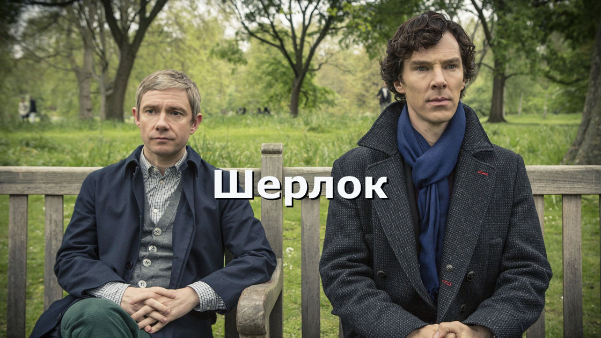

Лучшие сериалы нашего времени
Интересный факт из нейронаучных исследований: человек, и, действуя самостоятельно, и читая или смотря рассказ о действии, активирует те же участки мозга, то есть на уровне мозга невозможно определить, сам человек действует, или смотрит, читает об этом. Таким образом, просмотр сериалов может помочь человеку приобрести некоторый жизненный опыт, расширить его представления о мире, помочь адаптироваться к сложным реалиям современности. Наблюдая за героями, за непростыми ситуациями, в которых они оказываются, человек учится терпимее относиться к живым, окружающим его людям, приобретает здоровую психологию и гармоничный взгляд на мир.

К концу подходит время благоденствия, и лето, длившееся почти десятилетие, угасает. Вокруг средоточия власти Семи королевств, Железного трона, зреет заговор, и в это непростое время король решает искать поддержки у друга юности Эддарда Старка. В мире, где все — от короля до наемника — рвутся к власти, плетут интриги и готовы вонзить нож в спину, есть место и благородству, состраданию и любви. Между тем, никто не замечает пробуждение тьмы из легенд далеко на Севере — и лишь Стена защищает живых к югу от нее.
Один из лучших телесериалов в жанре средневекового фэнтези, отличающийся тщательной проработкой деталей, глубиной характеров и прежде всего хорошей драматургией.
Никакой пересказ сюжета не даст должного представления о духе сериала «Игра престолов». Все разномастные имена персонажей и названия земель в стиле фэнтези лишь формальная дань жанру. На деле зритель очень быстро забывает о том, что герои разряжены в псевдосредневековые одежды, размахивают мечами и стреляют из луков. На первый план выходят сложные интриги, борьба за сферы влияния и власть, напоминающие скорее коллизии классической криминальной саги в духе «Крестного отца». Несмотря на достаточную неторопливость событий, их логическая проработанность, психологическая достоверность и драматизм делают сериал одним из самых интригующих и качественных на мировом современном телеэкране.

Консультирующий детектив Шерлок Холмс, подыскивая соседа по квартире, знакомится с Джоном Ватсоном — военным врачом, вернувшимся из Афганистана. Они поселяются в доме 221 Б по Бейкер-стрит у пожилой хозяйки миссис Хадсон. Шерлок и Джон помогают Скотланд-Ярду в раскрытии сложных дел, используя методы наблюдения, анализа, дедукции, а также современные технологии, такие как интернет и мобильные телефоны.
Британский сериал «Шерлок», существующий на данный момент в количестве всего шести серий, прочно укрепился в нише главных телеразвлечений последнего времени. Идеальный выбор актеров на главные роли — впервые Холмс и Ватсон предстают перед нами молодыми людьми, именно такими, как их описывал поначалу Конан Дойл, — обеспечил сериалу массовый международный успех.
Авторы «Шэрлока» Марк Гэтисс и Стивен Моффат, известные работой над сериалами «Доктор Кто» и «Джекилл» радикально подошли к адаптации произведений Артура Конан Дойля: действие перенесено из XIX в XXI век. Главные роли Шерлока Холмса и доктора Джона Ватсона исполняют Бенедикт Камбербэтч и Мартин Фримен. Первый же сезон «Шерлока» собрал положительные отзывы критиков и был номинирован на несколько наград. В 2011 году «Шерлок» стал обладателем телевизионной премии BAFTA в категории «Лучший драматический сериал».
Команда врачей под руководством гениального, хоть и зловредного Грегори Хауса берется за самые сложные случаи. Сам доктор Хаус ходит с тростью и сидит на обезболивающих из-за того, что мышечный инфаркт в его правой ноге слишком поздно диагностировали. Как врач Хаус необычайно талантлив, но как человек не отличается проникновенностью в общении с больными. Будучи инфекционистом, он ещё и замечательный диагност, но любит решать медицинские загадки не столько чтобы спасти кому-то жизнь, сколько, кажется, из собственного интереса. Он избегает общения с больными, если только есть такая возможность, груб и нахален в общении с подчиненными и любит едко пошутить в самых неподходящих ситуациях. Порой его поведение можно назвать почти бесчеловечным, но несмотря на трудность его характера, на работе его ценят за его выдающийся ум и глубокие познания.
«Доктор Хаус» впервые был показан на американском телевидении в 2004 году и очень быстро завоевал мировую аудиторию — в огромной степени благодаря неотразимому шарму исполнителя главной роли Хью Лори — но и не без помощи талантливых сценаристов. Сериал получил множество престижных премий.
Школьный учитель химии Уолтер Уайт узнаёт, что болен раком лёгких. Учитывая сложное финансовое положение семьи, а также отсутствие надежды на улучшение дел в будущем (жена Уолтера, Скайлер, беременна вторым ребёнком, а у сына детский церебральный паралич), Уолтер решает заняться изготовлением метамфетамина. Учитель разыскивает своего бывшего ученика Джесси Пинкмана, когда-то исключённого из школы при его собственном активном содействии. Пинкман сам занимался изготовлением метамфетамина, но накануне в результате полицейского рейда лишился подельника и лаборатории...
Герои лишены привычных кинематографических клише, это достаточно сложные персонажи с богатым эмоциональным миром. Очень важная линия сериала это метаморфозы, которые происходят с Уолтером и Джесси, интересно наблюдать как кротость Уолтера сменяется злостью и решительностью, и как раздолбай Джесси становится ответственным и чутким к проблемам других людей.
Сериал «Во все тяжкие» впервые вышел на экраны в 2008 году и с тех пор неоднократно номинировался на «Эмми», традиционно получая несколько премий в год. Он заслужил высокие оценки критиков и был отмечен как один из лучших сериалов в истории телевидения мастером триллера Стивеном Кингом.
Амбициозный конгрессмен от Демократической партии Фрэнк Андервуд в обмен на обещание сделать его госсекретарём помогает Гаррету Уокеру стать президентом США. Однако после выборов глава администрации президента Линда Васкез сообщает Андервуду, что он не получит должность. Взбешенные предательством Фрэнк и его жена готовы пойти на всё, чтобы отомстить новоиспечённому президенту.
В «Карточном домике» американские кинематографисты в который раз обращаются к теме власти. Они пытаются ответить на вопрос, как работают ее внутренние механизмы, какая энергия ею движет. И по их представлениям, пространство, в котором действует человек, наделенный политической властью, меньше всего располагает к процветанию идеалов правды и добра. Того, кто позволяет себе пренебречь принципами целесообразности, немедленно поглощают более сильные соперники. В итоге получилась развернутая иллюстрация к циничному тезису, выдвинутому еще в XVI веке Никколо Макиавелли: «Выгоднее для государя, когда его боятся, чем когда его любят. Ибо люди по своей природе неблагодарны и непостоянны, склонны к лицемерию и обману, их отпугивает опасность и влечет нажива».
Помощник шерифа Рик Граймс получает тяжёлое пулевое ранение, вследствие чего впадает в кому. Очнувшись в больнице, он обнаруживает, что весь медицинский персонал исчез, а в самом здании царит разруха. Постепенно он приходит к осознанию того, что произошла трагедия и его привычный мир населен ожившими трупами. Он пытается во что бы то ни стало найти своих жену и сына, по-видимому, избежавших гибели, и помочь им выжить в опасном новом мире. По пути он встречается с другими уцелевшими и возглавляет борьбу за выживание.
Сериал «Ходячие мертвецы» основан на одноименной серии постаполикаптических комиксов Роберта Киркмана, Тони Мура и Чарли Адлара.
Рецепт успеха «Ходячих мертвецов» прост как все гениальное. Во-первых, жанр зомби-фильмов, видимо, не выйдет из моды никогда. Во-вторых, авторам удалось акцентировать внимание на внутреннем мире выживших, показать стагнацию изменений — социологических и психологических.

Гуманоид, называющий себя Доктором, путешествует сквозь время и пространство в космическом корабле, который снаружи выглядит как полицейская будка 50-х годов. Доктор чрезвычайно эксцентричен и имеет невероятные познания в технологии, истории и науке. Он путешествует вместе со своими компаньонами, борясь против космических злодеев. Изначально раздражительный и немного зловещий Доктор скоро смягчился и превратился в доброго и сострадательного.
Сериал «Доктор Кто» — самый продолжительный научно-фантастический сериал в мире. Новая версия «Доктор Кто» является прямым продолжением сезонов 1963-1989. В 2005 году обновленный «Доктор» вернулся на телевидение и стал уже не локальным, а мировым хитом: сериал о путешествиях во времени оказался невероятно к месту в мире, где времени ни на что не хватает. В 2006 году сериал был удостоен премии BAFTA.
Актерская игра находится на высоком уровне, начиная от главных героев заканчивая эпизодическими персонажами. Восхитительные истории о любви, одиночестве, преданности, дружбе, сострадании в сочетании с безумными космическими приключениями, борьбой со злом и путешествиями во времени составляют тот самый, идеальный баланс, благодаря которому данное шоу является одним из самых популярных в мире сериалов для любых возрастов.
Двое полицейских, Раст Кол и Мартин Харт, расследуют дело 1995 года о серийном убийце в Луизиане. Когда-то, 17 лет назад, это дело познакомило Раста и Мартина, и с тех пор они вместе охотились за киллером. Новые улики, неожиданно появившиеся в 2012 году, могут привести к шокирующим открытиям, тем более что самим детективам есть, что скрывать. Свидетельские показания многолетней давности перемежаются событиями, которые происходят в наше время.
Главное в сериале — это, конечно, персонажи и актерские работы. Раст Коул — доведенный до предела антигерой современной массовой культуры. Он не верит в человеческие объединения, презирая не только организованную религию и структуры власти, но и саму мысль о способности человека к нормальной коммуникации — люди не умеют любить, а умеют только судить.
«Настоящий детектив» с первых минут дает понять, что само расследование тут играет не самую важную роль. Ник Пиццолатто придумал настолько литературную историю, что даже сериальный формат ему не помеха, а может, даже помощник: впечатляющие монологи, порой вызывающе патетичные; проработанные главные персонажи, с каждой серией раскрывающие новые детали биографии и характера.
Сержанта морской пехоты Николаса Броуди долгое время считали пропавшим без вести и предположительно погибшим в бою. Но вот — его находят после рейда на штаб-квартиру террористов. Эксперт ЦРУ по Ближнему Востоку Кэрри Мэтисон считает, что в настоящее время сержант Броуди завербован «Аль-Каидой» и специально «оставлен» спасшему его отряду спецподразделения Дельта для возвращения в США и организации террористической атаки. Однако, руководство страны и общественность верят, что сержант Броуди — герой войны, что значительно затрудняет расследование. Сериал в жанре психологического триллера «чужой среди своих» впервые появился на экранах в 2011 году и сразу полюбился и критикам и аудитории.
Выверенный шпионский триллер смело рифмует терроризм с любовной историей и семейной драмой, вызывая у зрителя противоречивые желания сопереживания то одному, то другому герою.
Американский ремейк британского сериала, повествующий о взбалмошной многодетной семье Галлахеров и их соседях, которые веселятся, попадают в самые невероятные ситуации и пытаются выжить в этом мире всеми возможными средствами, но при этом как можно меньше работая.
Практически все актеры отыгрывают свои роли на сто процентов. Великолепно сняты драматические сцены, которые затрагивают в зрителе, самые глубокие чувства. Безупречная операторская робота, прекрасная подача контраста света и стиля персонажей. Режиссер мастерски изображает события сюжета. Саудтреки и музыкальное сопровождение подобраны идеально, что придает печальным сценам еще больше драматизма. В сериале нет четкой сюжетной линии, зритель наблюдает просто историю жизней всех членов не очень благополучной семьи, погружаясь в атмосферу взлетов и падений персонажей, учась не сдаваться и сопереживать и видеть в людях что-то большее, чем внешнюю оболочку, социальный статус.